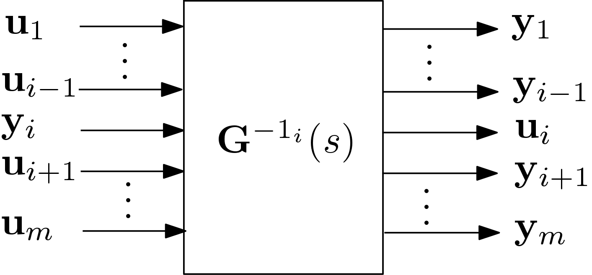

invio
Inverse specified input/output channels in a square (same numbers of inputs and outputs) invertible LTI system.
Contents
Syntax
sys_out=invio(sys_in,I)
Description
Considering a square (same number of inputs and outputs) linear system $\mathbf{G}(\mathrm{s})=\mathbf{D}_{m \times m}+\mathbf{C}_{m \times n}(\mathrm{s}\mathbf{1}_n-\mathbf{A}_{n \times n})^{-1}\mathbf{B}_{n \times m}$ with order $n$ and $m$ channels (i.e. $m$ inputs and $m$ outputs). Assuming $\mathbf{D}$ is invertible, the system corresponding to the inversion of the $i$-th channel of the system $\mathbf{G}(\mathrm{s})$ ($i\in[1,\,m]$) is denoted $\mathbf{G}^{-1_i}(\mathrm{s})$ and is depicted in the following Figure.

Multi channel inversion: Let $\mathbf{I}$ be the vector (with $q$ components) of indices corresponding to the channels to be inverted. The successive inversion of the $q$ channels in $\mathbf{G}(\mathrm{s})$ is denoted: $$ \mathbf{G}^{-1_{\mathbf{I}}}(\mathrm{s})=\left[\left[\left[\mathbf{G}^{-1_{\mathbf{I}(1)}}\right]^{-1_{\mathbf{I}(2)}}\right]^{\cdots}\right]^{-1_{\mathbf{I}(q)}}(\mathrm{s})\;. $$
Input/output arguments
Input arguments
sys_in: LTI system (ss,tforuss)I: vector of integers
Output argument
sys_out: LTI system (ssoruss)